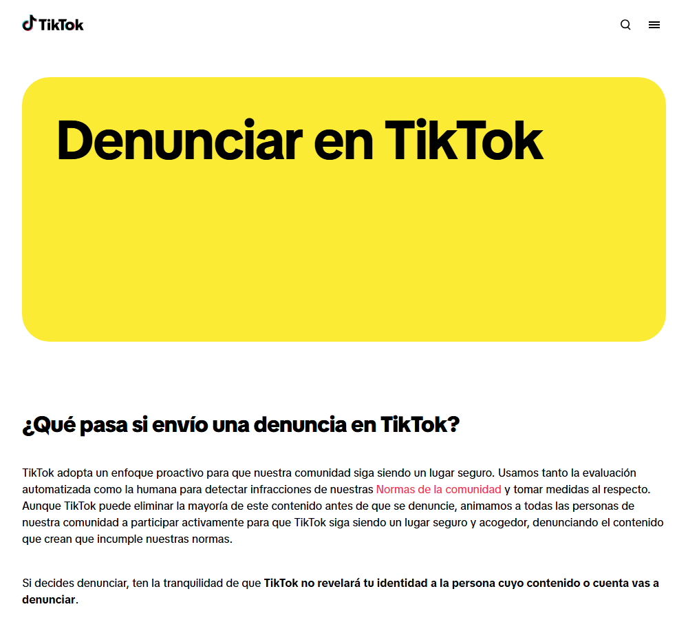

Gestionar contactos: silenciar, bloquear y denunciar
Sabrás elegir la herramienta adecuada —silenciar, bloquear o denunciar— según cada situación.
Gestionar contactos: silenciar, bloquear y denunciar
Tres herramientas, tres propósitos distintos
| Herramienta | Qué hace | ¿La otra persona se entera? | Cuándo usarla |
|---|---|---|---|
| Silenciar | Deja de aparecer en tu feed, pero seguís «conectados» | No | Contenido que no te interesa, sin conflicto |
| Bloquear | Esa persona ya no puede verte ni contactarte | Normalmente no se notifica | Contactos incómodos, insistentes o que te hacen sentir mal |
| Denunciar / reportar | Informas a la plataforma para que revise una cuenta o contenido | No | Acoso, contenido violento, sexual, discurso de odio o estafas |
Cómo denunciar en las principales redes sociales · canal oficial Internet Segura for Kids (IS4K) / INCIBE en YouTube
Cómo reportar y denunciar dentro de Facebook, Instagram, X (Twitter), Snapchat y YouTube.

La propia plataforma anima a denunciar: usa detección automática y humana, y garantiza que no revelará tu identidad a quien denuncies.
Captura real de tiktok.com/safety (23/09/2026). El aspecto de la web puede cambiar con el tiempo.
Cómo se denuncia (idea general)
- Busca el icono de tres puntos (⋯) o una flecha junto al perfil, comentario o publicación.
- Elige Denunciar o Reportar.
- Selecciona el motivo que mejor describa el problema: te ayudará a que la plataforma lo revise más rápido.
- Si el contenido es grave (amenazas, contenido sexual de menores, incitación al odio), denúncialo aunque no seas tú la persona afectada.
Antes de bloquear: guarda pruebas
Denunciar no es «acusar en falso»
- ✅ Denunciar contenido que incumple las normas no tiene ninguna consecuencia negativa para ti.
- 🙋 Puedes denunciar aunque el contenido no vaya dirigido a ti: proteges también a otras personas.
- ⏱️ Las plataformas no siempre responden al momento: si la situación es urgente, combina la denuncia con pedir ayuda a una persona adulta o a la línea 017.
🧩 Silenciar vs bloquear
Un contacto publica cosas que no te interesan, pero no te hace ningún daño. ¿Qué herramienta encaja mejor?
🧩 Antes de bloquear
Alguien te está acosando y valoras contarlo a un adulto. ¿Qué deberías hacer antes de bloquearlo?
🧩 Denunciar sin ser la víctima
Ves un vídeo con discurso de odio dirigido a otra persona, no a ti. ¿Deberías denunciarlo?